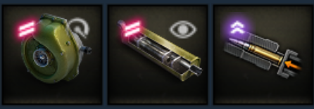
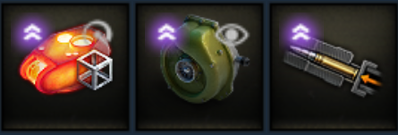

Introduction to whatever this is

so, you too, saw this tank and thought it looked fucking cool? well, welcome to the concept 5 fan club! like its looks, it has a few aces up its sleeves. not exactly many, but notable few actually. lets go over them. but before that!! take a look at its stats and *soft stats that the in-game stats dont mention.
*what are soft stats? well general rule of thumb, just think of terrain resistance, disperion on the move and its variations, and engine, track related stuff.
GENERAL STUFF
the concept 5 is a british wheeled medium, and one of the very few wheeled tanks. it works differently from french wheelies. it has 480 alpha which is very nice for a medium tank of this much speed. speaking of speed, its quite speedy, reaching near 70km/h forward with a turbo
PLAYSTYLE
since its quite agile, but has practically no armor, you can adopt a hit and run platstyle. it is quite good at what it does if you know what you're doing. by tht, i mean having extensive map knowledge, situational awareness, and whatever makes you have 65% winrate. yeah. thats it. jokes aside, it has slightly underwhelming camo for its intended playstyle. i personally like to crank it upto howver much high i can, i get around 40% stationary with normal LNE with a directive.what i usually do is use the speed to get into spots to get early damage. i do it by getting at crossing points, such as the mountain of Karelia, middle of Paris, etc. you wanna save as much HP as you can. the concept is a very strong tank in the endgame. now, onto the equipment
LOADOUT
for this tank, i use mainly 2 types of loadout, one suited for the stealthy hit and run, and another for abit more aggressive form for it. the latter platystyle is adopted on city maps, and the first one is in maps where you can make use of view range, or generally have more breathing room to move around and some bushes.
1. BROAD MAP

for generally larger maps, i like to use low noise exhaust, turbo, and gun rammer. You also have to use food and suitable crew skills to crank up camo and view range. trust me, turbo is a GAME CHANGER for this tank. it's like an entirely different tank with turbo.
2. CITY MAP

now, for city maps, you generally want to go with a more aggressive playstyle. for that, you can use hardening, turbo, an gun rammer for the extended hitpoints, speed and dpm.
try to make use of the speed to get at crossing points to get hits on corssing tanks
general idea
if you had to follow a certain note to play it, you would have to go with this in my opinion:
- select the suitable loadout for the map
- get into important positions as fast as possible to get a hit or two on crossing tanks
- pull back, patiently wait for mistakes from behind
- scour around the map to find weaknesses in the enemy position to turn it into a full blown flank
- it's free real estate
ENDING REMARKS
nothing to point out tbh, just a very fun tank. gg